Soru 1Cevap: B
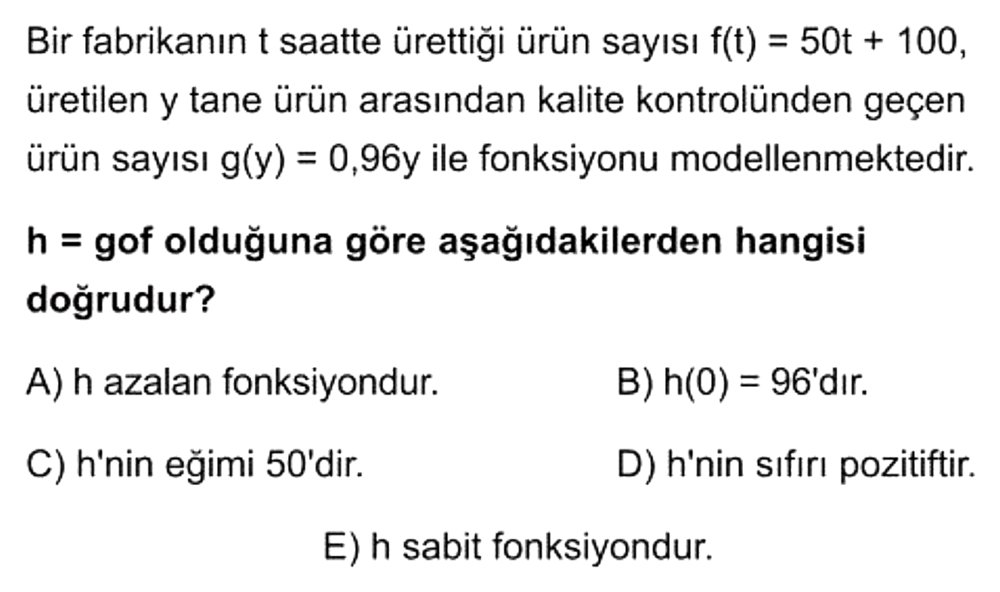
Çözüm
- $h(t)=0{,}96(50t+100)=48t+96$.
- Eğim $48\gt0$: artan; $h(0)=96$.
- Doğru ifade $h(0)=96$ (B).
Cevap: B
Soru 2Cevap: A
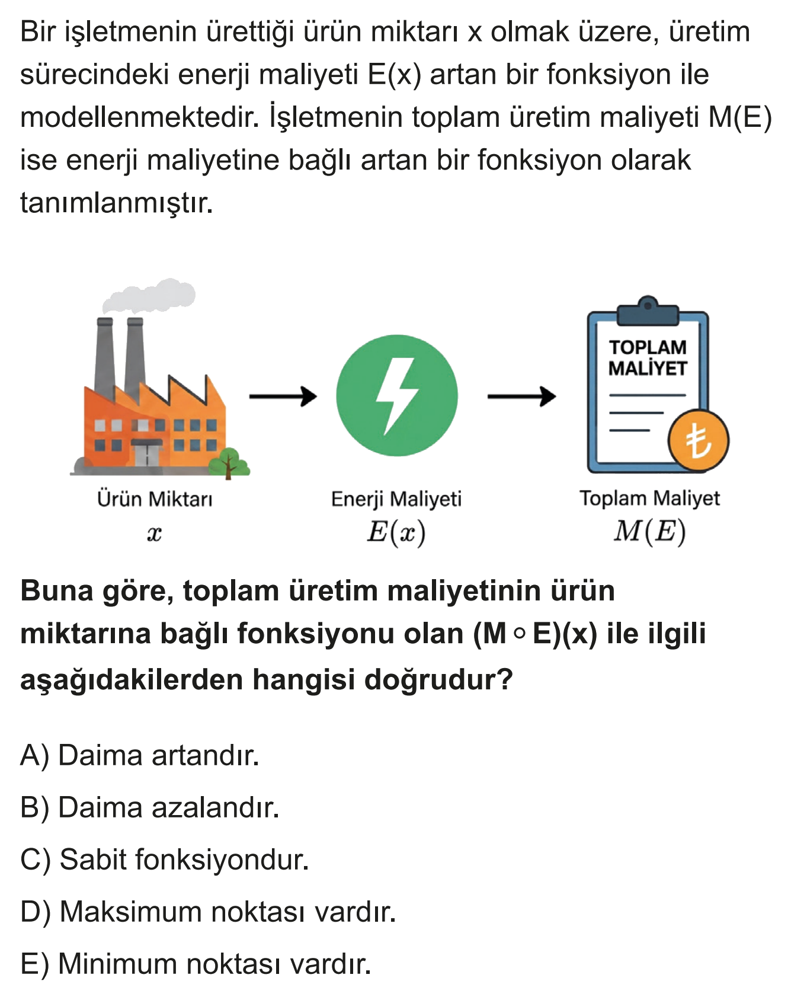
Çözüm
- $E$ artan, $M$ artan fonksiyondur.
- $M\circ E$: artan∘artan.
- Aynı karakterli fonksiyonların bileşkesi artandır (A).
Cevap: A
Soru 3Cevap: A
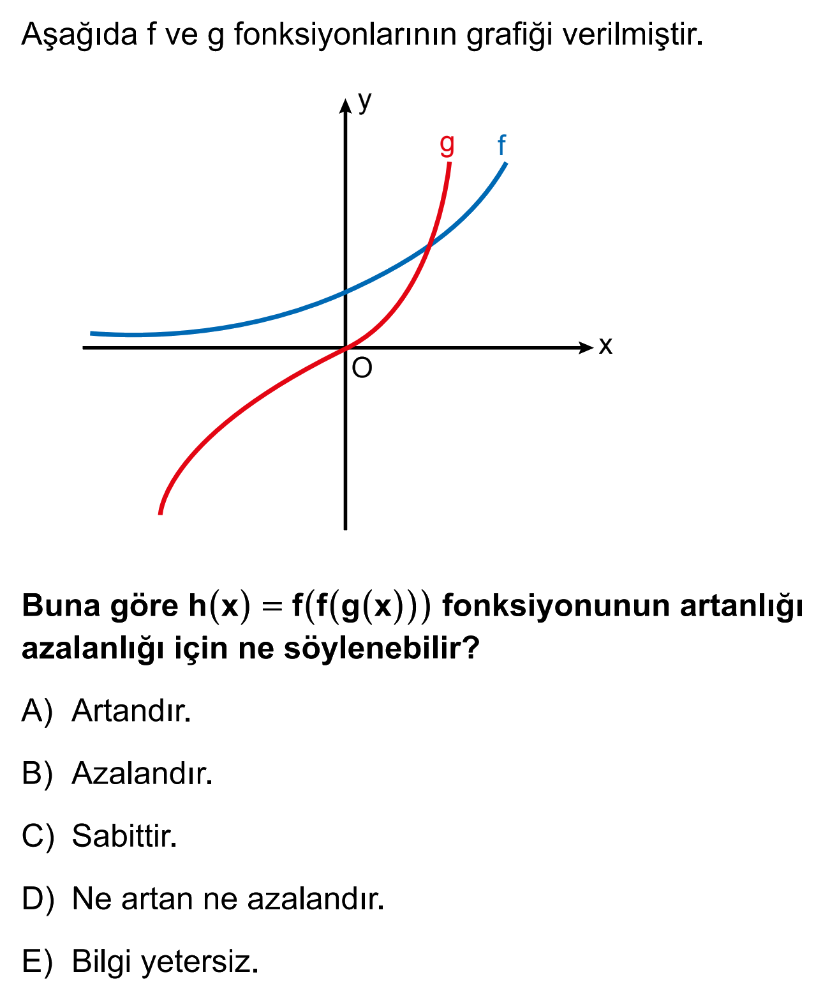
Çözüm
- Grafikte $f$ ve $g$ artan fonksiyonlardır.
- Artan fonksiyonların bileşkesi artandır: $f\circ g$ ve ardından $f\circ(f\circ g)$ artan.
- $h$ artandır (A).
Cevap: A
Soru 4Cevap: D
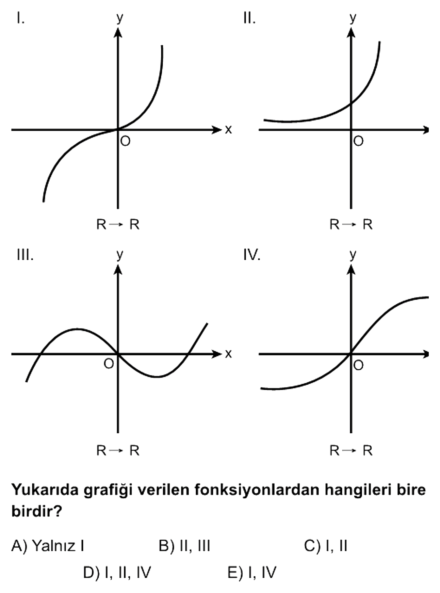
Çözüm
- I, II ve IV grafiklerinde fonksiyon tanım kümesinde sürekli artandır.
- Yatay doğru testi: her yatay doğru grafiği en fazla bir noktada keser.
- III dalgalı, bazı yatay doğrular birden fazla noktada keser. Cevap I, II ve IV (D).
Cevap: D
Soru 5Cevap: E
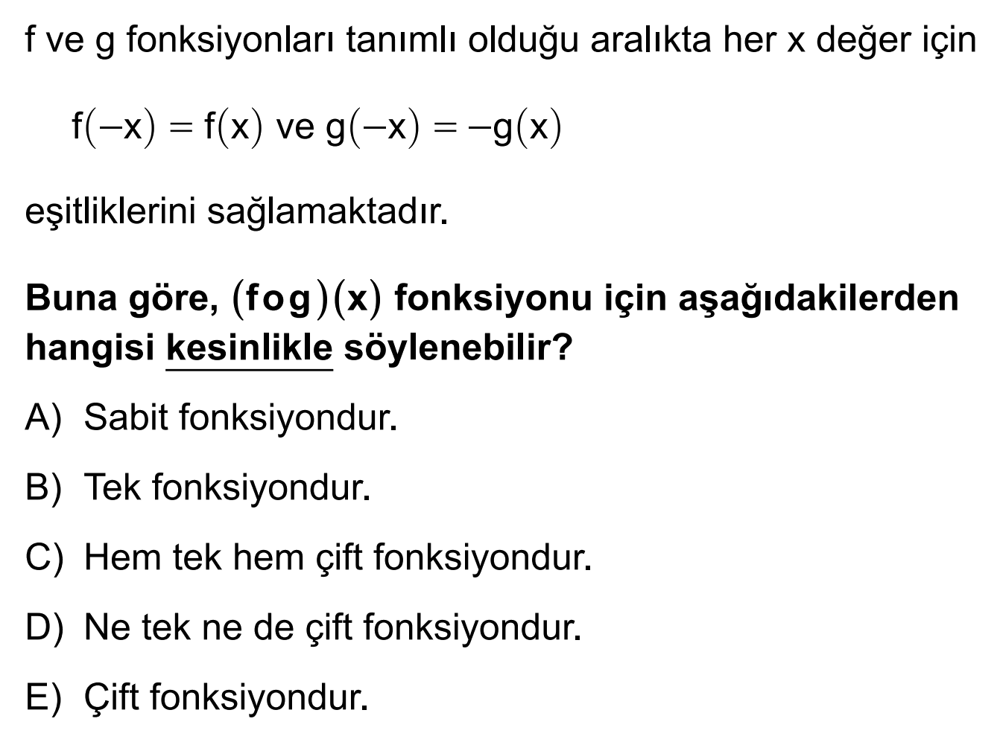
Çözüm
- $f$ çift, $g$ tek.
- $(f\circ g)(-x)=f(g(-x))=f(-g(x))=f(g(x))$.
- $f\circ g$ çift fonksiyondur (E).
Cevap: E
Soru 6Cevap: B
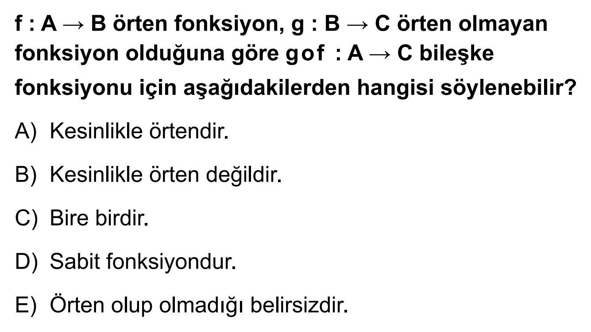
Çözüm
- $g$ örten olmadığından $C$'de $g$'nin hiç almadığı bir eleman vardır.
- $g\circ f$'nin değerleri $g$'nin değerleri arasında olduğundan o eleman alınamaz.
- $g\circ f$ kesinlikle örten değildir (B).
Cevap: B
Soru 7Cevap: B
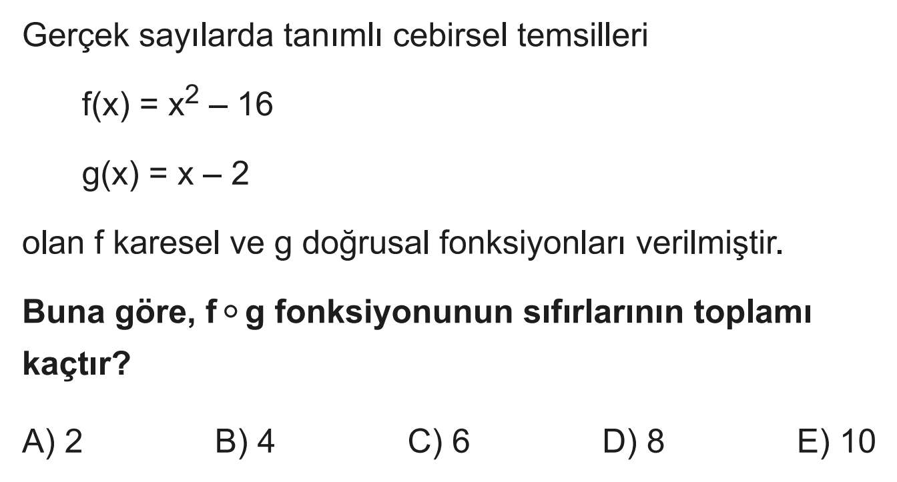
Çözüm
- $(f\circ g)(x)=(x-2)^2-16$.
- $(x-2)^2=16\Rightarrow x-2=\pm4$.
- $x=6$ veya $x=-2$; toplam $4$ (B).
Cevap: B
Soru 8Cevap: C
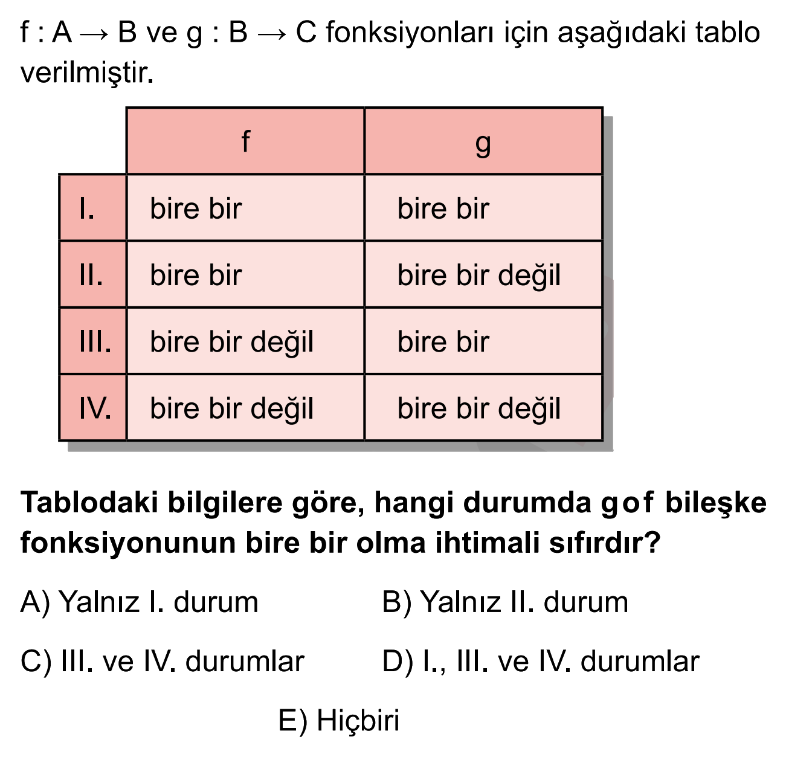
Çözüm
- $f$ bire bir değilse $g\circ f$ asla bire bir olamaz.
- III ve IV durumlarında $f$ bire bir değildir.
- Olasılığı sıfır olanlar III ve IV (C).
Cevap: C
Soru 9Cevap: E
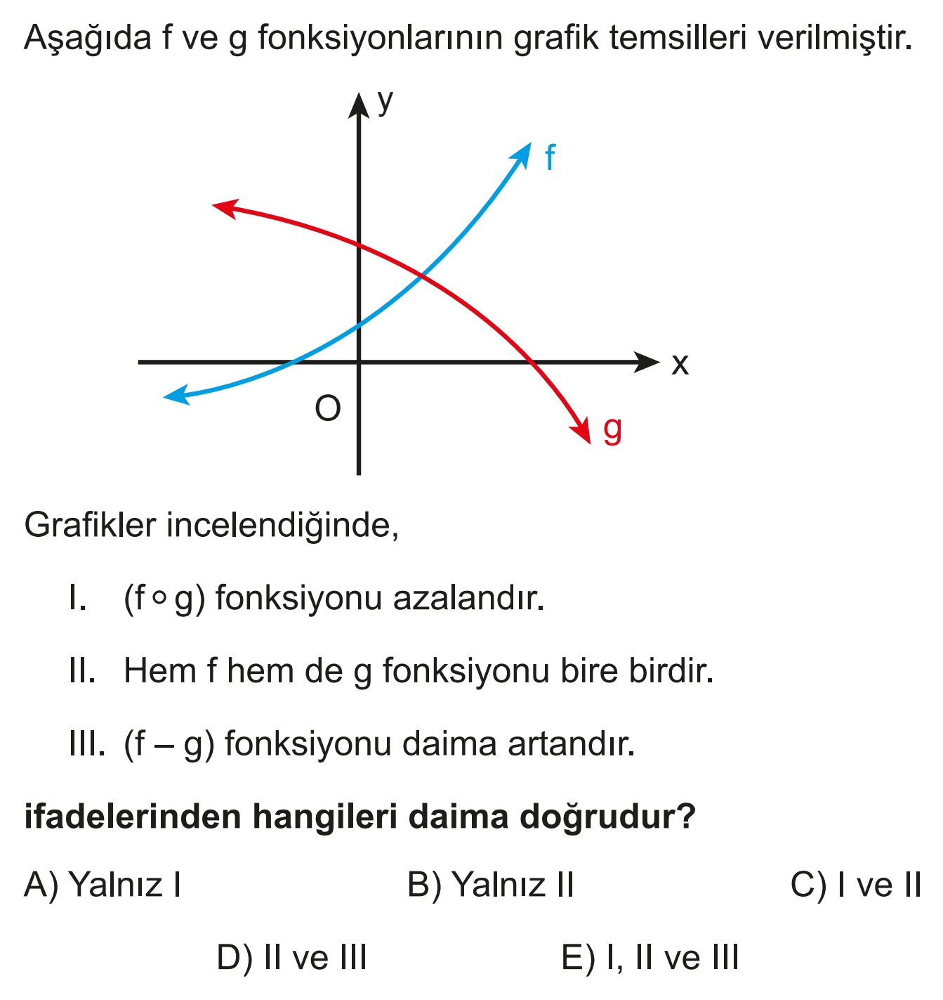
Çözüm
- Grafikte $f$ artan, $g$ azalan: artan∘azalan azalandır, I doğru.
- Kesin artan ya da azalan fonksiyonlar bire birdir: II doğru.
- Artan $f$'den azalan $g$ çıkarılınca $f-g$ artar: III doğru (E).
Cevap: E
Soru 10Cevap: B
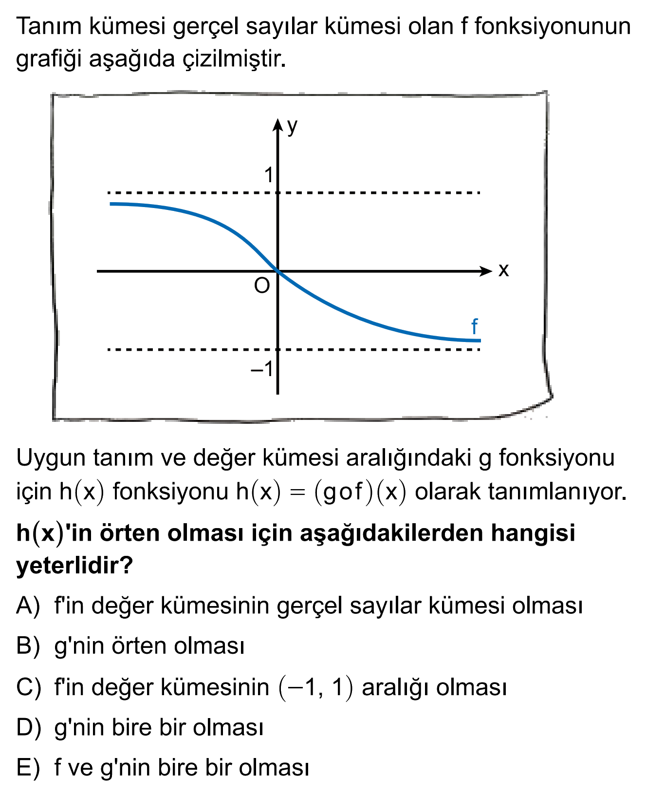
Çözüm
- Grafikten $f$'nin değerleri $(-1,1)$ aralığındadır ve bu aralığı tamamen kaplar.
- $h=g\circ f$'de $g$, $(-1,1)$ üzerinde tanımlıdır.
- $g$ örten ise $h$ de örten olur: yeterli koşul B.
Cevap: B
Soru 11Cevap: B
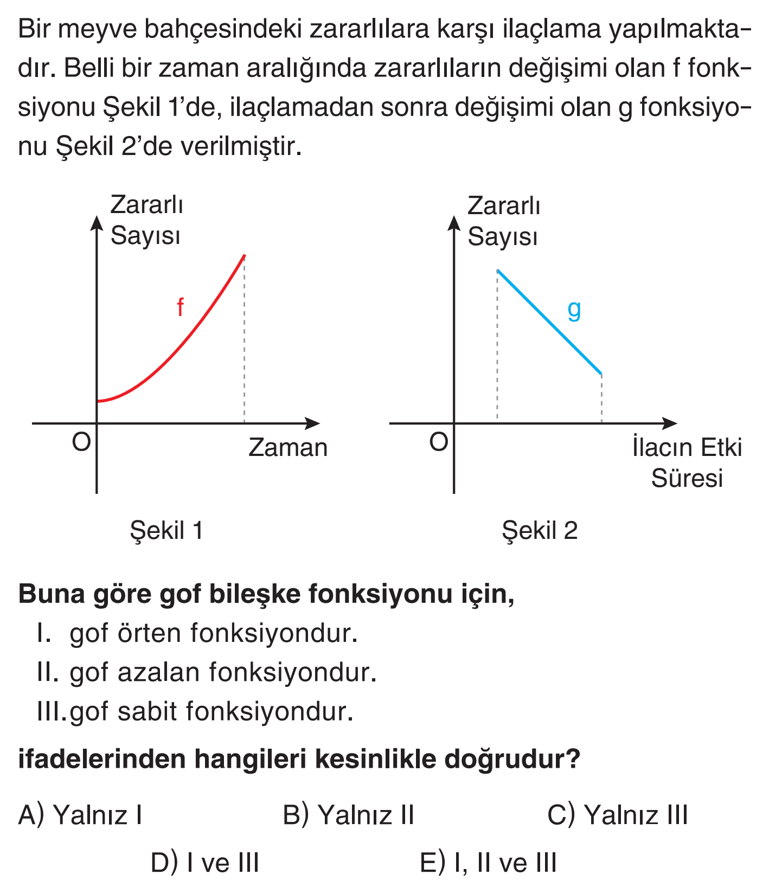
Çözüm
- Şekil 1: $f$ artan; Şekil 2: $g$ azalan.
- $g\circ f$: azalan∘artan azalandır.
- Örtenlik ve sabitlik kesin değildir: yalnız II (B).
Cevap: B
Soru 12Cevap: D
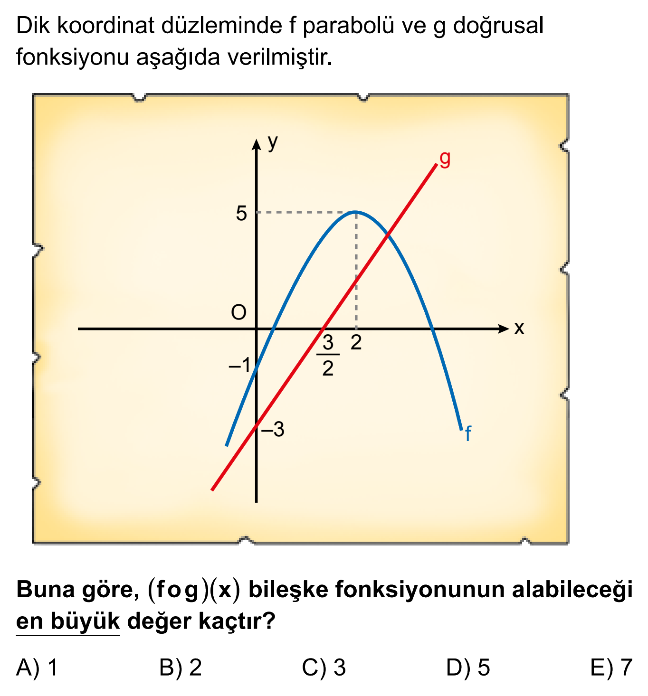
Çözüm
- Grafikten $f$'nin en büyük değeri $5$'tir.
- $g$ doğrusal olduğundan her gerçek değeri alır; $f$'nin tepe noktasındaki girdi de alınır.
- $(f\circ g)$'nin en büyük değeri $5$ (D).
Cevap: D
Soru 13Cevap: A
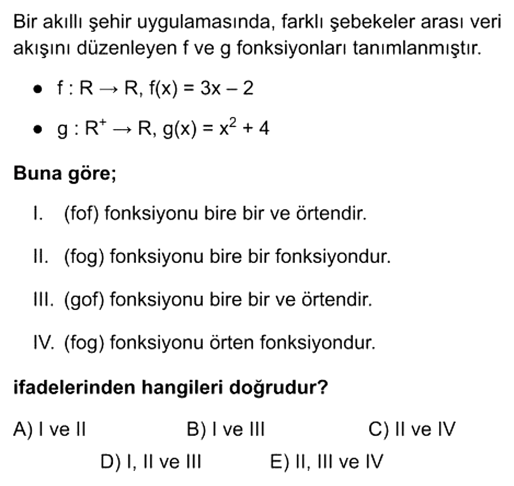
Çözüm
- $(f\circ f)(x)=9x-8$: bire bir ve örten (I).
- $(f\circ g)(x)=3x^2+10$, $x\gt0$'da artan: bire bir (II).
- $f\circ g$'nin görüntüsü $(10,\infty)$: örten değil (IV yanlış). Cevap I ve II (A).
Cevap: A
Soru 14Cevap: C
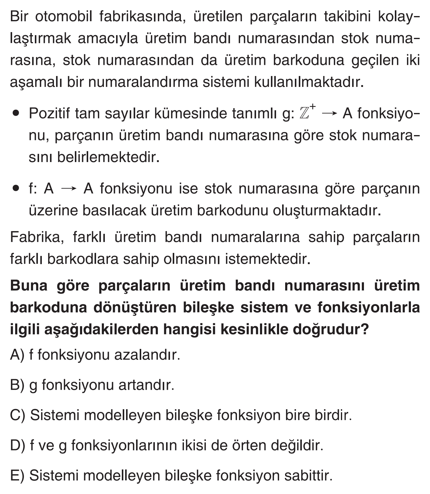
Çözüm
- Farklı bant numaraları farklı barkod vermeli.
- Bu, bant numarasından barkoda giden bileşke fonksiyonun bire bir olması demektir.
- Sistemi modelleyen bileşke bire birdir (C).
Cevap: C
Soru 15Cevap: A
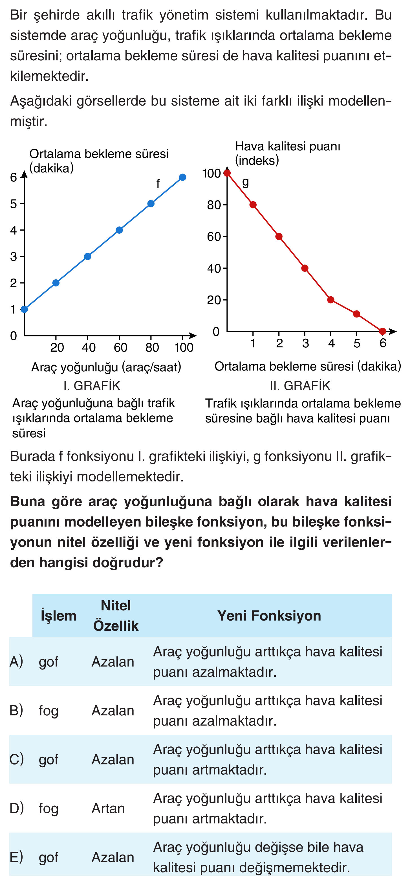
Çözüm
- I. grafik: yoğunluk arttıkça bekleme süresi artar, $f$ artan.
- II. grafik: bekleme süresi arttıkça hava kalitesi azalır, $g$ azalan.
- $g\circ f$ azalan: yoğunluk arttıkça hava kalitesi azalır (A).
Cevap: A
Soru 16Cevap: B
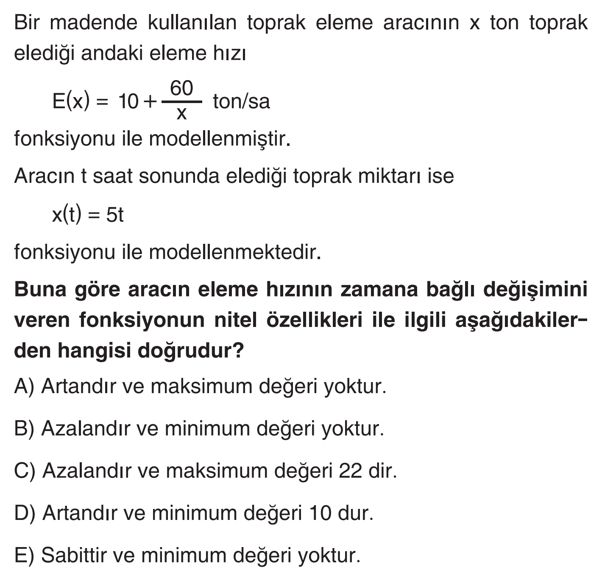
Çözüm
- $E(x(t))=10+\dfrac{60}{5t}=10+\dfrac{12}{t}$ ($t\gt0$).
- $t$ arttıkça $\dfrac{12}{t}$ azalır: fonksiyon azalandır.
- Değerler $10$'a yaklaşır ama ulaşmaz: minimum değeri yoktur (B).
Cevap: B
Soru 17Cevap: D
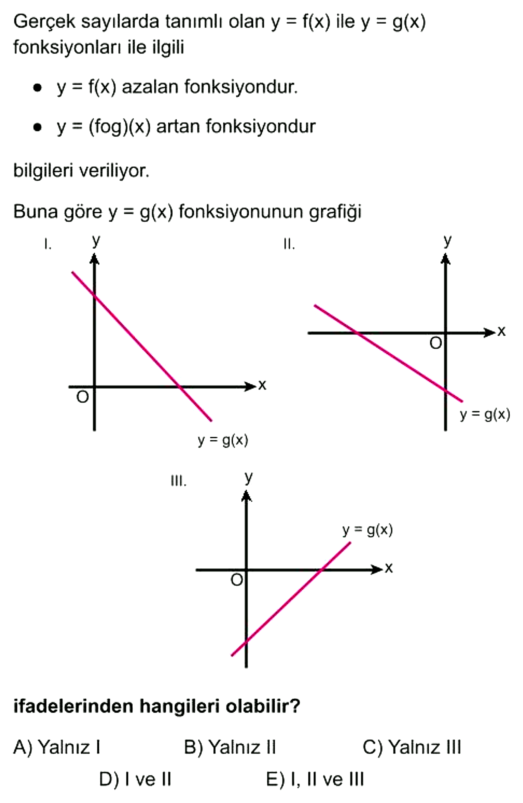
Çözüm
- $f$ azalan ve $f\circ g$ artan: $g$ azalan olmalıdır.
- Grafik I ve II azalan, III artan doğrudur.
- Olabilenler I ve II (D).
Cevap: D
Soru 18Cevap: D
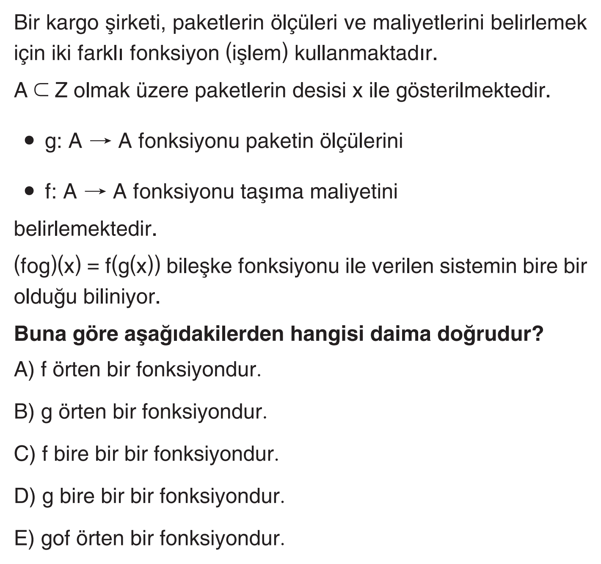
Çözüm
- $g(a)=g(b)$ olsaydı $f(g(a))=f(g(b))$ olurdu.
- $f\circ g$ bire bir olduğundan bu ancak $a=b$ ise mümkündür.
- O hâlde $g$ kesinlikle bire birdir (D).
Cevap: D
Soru 19Cevap: D
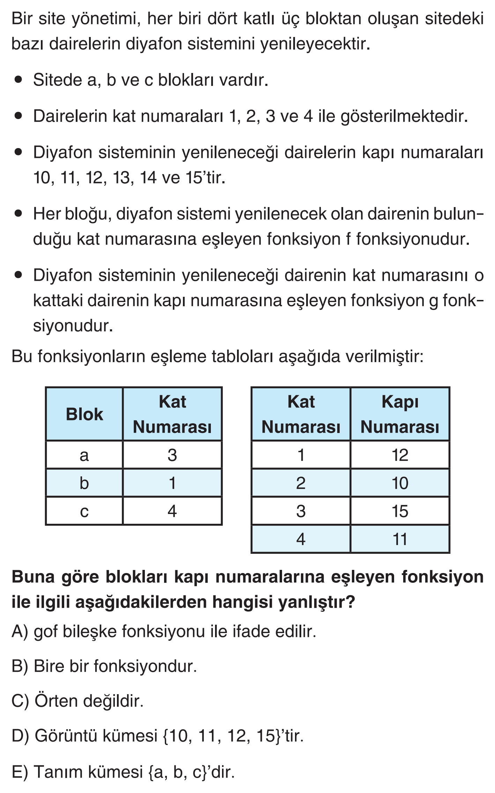
Çözüm
- $g\circ f$: $a\to3\to15$, $b\to1\to12$, $c\to4\to11$.
- Görüntü kümesi $\{11,12,15\}$; bire birdir, tanım kümesi $\{a,b,c\}$, $10$ alınmadığından örten değildir.
- Yanlış ifade: görüntü kümesi $\{10,11,12,15\}$ (D).
Cevap: D
Soru 20Cevap: A
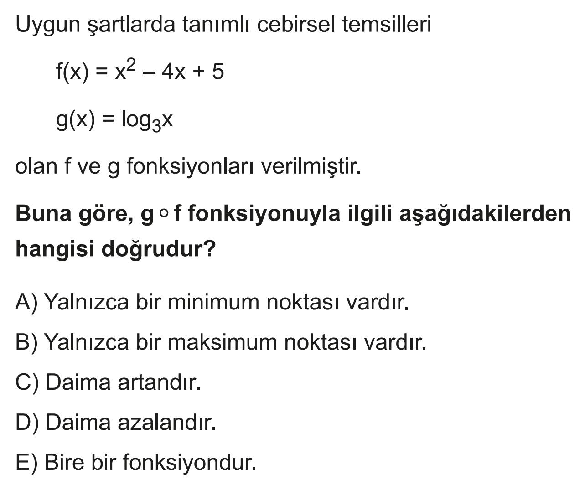
Çözüm
- $(g\circ f)(x)=\log_3(x^2-4x+5)=\log_3((x-2)^2+1)$.
- İçteki $f$'nin minimumu $x=2$'de $1$; $\log_3$ artan olduğundan minimum korunur.
- Yalnızca bir minimum noktası vardır ($x=2$, değer $0$) (A).
Cevap: A
Soru 21Cevap: C
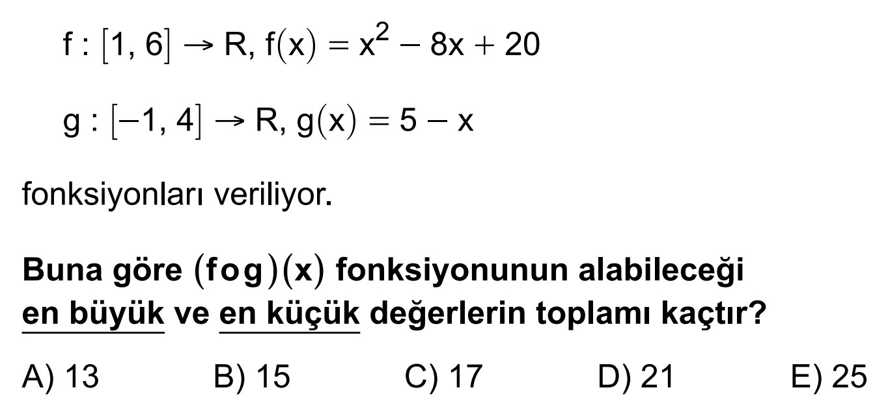
Çözüm
- $x\in[-1,4]$ için $g(x)=5-x\in[1,6]$; $f(t)=(t-4)^2+4$, $t\in[1,6]$.
- En küçük $f(4)=4$, en büyük $f(1)=13$ ($f(6)=8$).
- Toplam $13+4=17$ (C).
Cevap: C
Soru 22Cevap: E
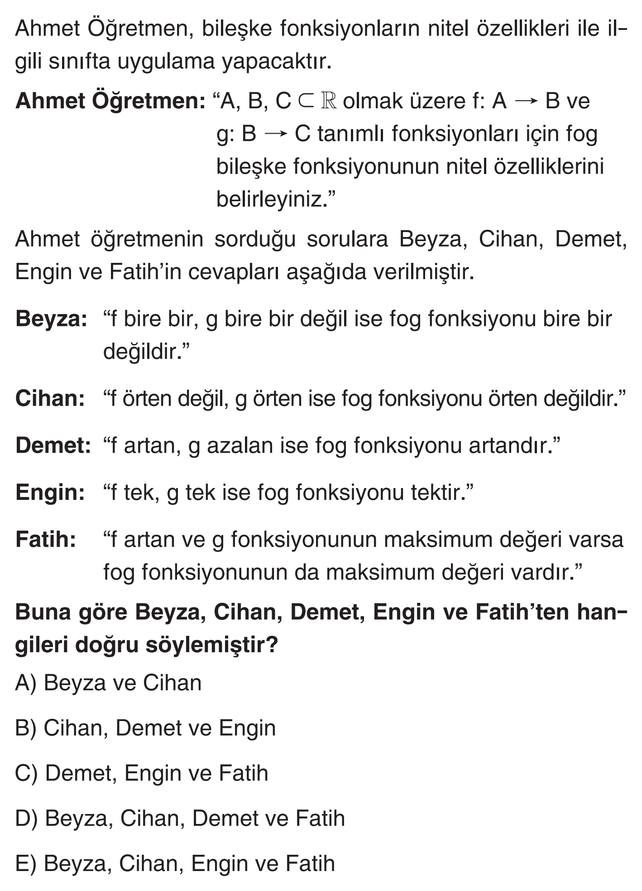
Çözüm
- Beyza: iç fonksiyon $g$ bire bir değilse $f\circ g$ bire bir olamaz, doğru. Cihan: dıştaki $f$ örten değilse $f\circ g$ örten olamaz, doğru.
- Demet: artan∘azalan azalandır, yanlış.
- Engin: tek∘tek tek, doğru; Fatih: artan dış fonksiyon maksimumu korur, doğru (E).
Cevap: E
Soru 23Cevap: A
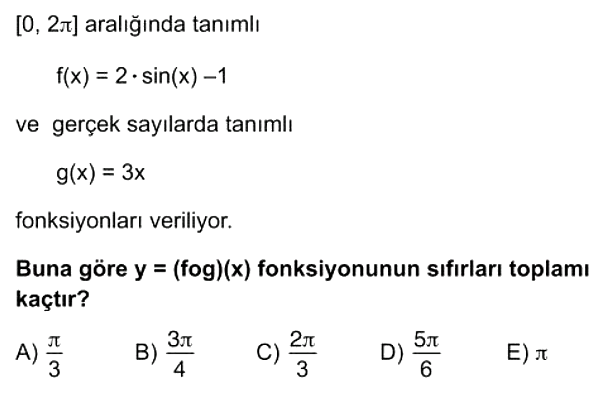
Çözüm
- $(f\circ g)(x)=2\sin3x-1$; $3x\in[0,2\pi)$ olmalı: $x\in\left[0,\dfrac{2\pi}{3}\right)$.
- $\sin3x=\dfrac12\Rightarrow3x=\dfrac\pi6$ veya $\dfrac{5\pi}{6}$.
- $x=\dfrac{\pi}{18},\dfrac{5\pi}{18}$; toplam $\dfrac\pi3$ (A).
Cevap: A
Soru 24Cevap: E
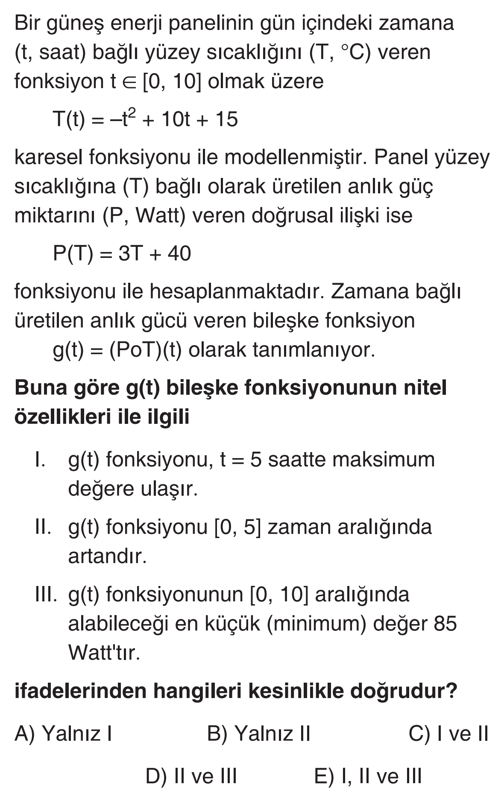
Çözüm
- $g(t)=3(-t^2+10t+15)+40$; $P$ artan olduğundan $g$, $T$ ile aynı yerde maksimum: $t=5$ (I).
- $T$, $[0,5]$'te artan; $P$ artan: $g$ de artan (II).
- $T(0)=T(10)=15$ en küçük: $g=3\cdot15+40=85$ (III). Cevap E.
Cevap: E